Virtua Fighter 5 FS コスプレ：七曜 編
懐かしの『Virtua Fighter 2』が Xbox 360 で配信されたのを良い機会として、 VF5FS の追加衣装を全部購入した。今、私はキャラに「コスプレ」をさせて楽しんでいる。他のゲーム(後述)の「キャラクリ」と違い、自由度が少ないが、限られたコスチュームで自分が気に入るコーディネイトをした結果、何かのテーマやキャラが見えてくるのが楽しい。 今回は、そうやって「コスプレ」させたのをテーマごとに《リリアン女学園 編》《七曜 編》《その他 編》としてまとめ、紹介する。この記事は《七曜 編》で、太陽系の惑星の中華風な擬人化を行う。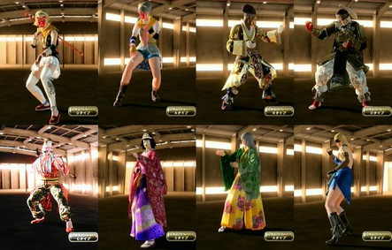
なお、この記事のリード部分は各編でも同じなので、すでに読んだ方は次の節まで読み飛ばしてくださればよい。 『Virtua Fighter 5 Final Showdown』(バーチャファイター５ファイナルショーダウン、略して VF5FS) は、元はアーケードゲームだったのが、Xbox 360 または PlayStation 3 に移植されたもので、ダウンロードで購入できる。 さらに追加コスチュームを買うことでキャラの衣装を変えられるようになる。各キャラごとにコスチュームが売っているが、複数のキャラがセットになったものが２セットあり、その２セットを変えばすべのキャラの衣装が揃う。 私は前作の『Virtua Fighter 5 Live Arena』(以下 VF5LA と略す)もダウンロード購入していたが、そちらは衣装は各キャラで攻略をしてはじめて手に入るものだった。ところが、今作 VF5FS のダウンロード版では、キャラのコスチュームセットを買えば、いきなりすべての衣装が使える。 だから、「コスプレ」目的ならば、ダウンロード購入時に一気に複数キャラのアイテムセットのその１とその２を揃えてしまえば、幸か不幸か最初に出たアイテムセット以来、新しいコスチュームの追加はないので、すべての衣装を制限なく使えることになる。(CG の動きのはげしさを避けるためらしい制限はある。)今なら全部で 3600 MSP (PS3 だと4500円)。オススメ。 (「コスプレ」のこのゲーム内での正しい呼称は「アイテムカスタマイズ」らしい。Terminal メニューから入る。) なお、『Virtua Fighter 2』が好きだったオールドファンの中には「バーチャ」が、3や 4 になってどんどん操作や概念が難しくなることに付いていけなくなった方もいるかもしれない。(私もそうだった。)でも、この 5 のシステムは、あえて操作を単純化する方向が出されているようで、ファンの多かった VF2 のグラフィックを極限まで美化した「だけ」に留めたといった感がある。ロートル格闘ゲーマーにもオススメである。 この先、コスプレデータの「レシピ」すなわち使った衣装名等も公開するが、言及のない身体部位はアイテムを使っておらず、省略した。 ■はじまりのイメージ VF5FS を買って、サラとアオイを使っての「実験」が終ったころ、それ以外のキャラをどう使うかを考えはじめた。 こういう格闘ゲームを「祭式」に使えないか…みたいな夢想が私には以前からあって、平安朝風の衣装で能面を付けて踊るイメージや、田楽・猿楽の源流への想像から、中国風の衣装で猿面を付けて踊るイメージがあった。 「平安朝風の衣装で能面を付けて踊るイメージ」はアオイで試そうとしたが、着物や烏帽子が、どうも違和感が残ってしまい、うまくない。 「中国風の衣装で猿面を付けて踊るイメージ」のほうは、猿の拳を使うアイリーンは何か違う、もっと雄壮な感じ…ラウの拳のように雄壮な感じ…と想って調べると、ラウには猿面が用意されていることを知った。 その猿面を付けて踊るモノの名は「<ruby><rb>太白</rb><rt>たいはく</rt></ruby>」、どこかで見たキャラの名前だろうか、私の中で、なぜかそれだけは決まっていた…。 ■歳星 (歳星・木星・Jupiter)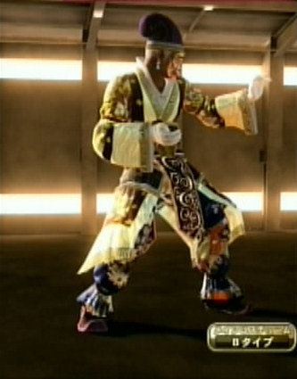
一番イメージに近いのはコスチュームタイプは A タイプだったのだが、どうも<ruby><rb>襟</rb><rt>エリ</rt></ruby>が高過ぎて気に入らない。上半身に含らんだ感じが欲しい…と思って探すと 鎧を着た Dタイプがイメージに近いが、鎧は固すぎてもう少し遊びみたいなのが欲しい…。 そこで、服から入るのはやめて、頭のほうをデザインしようとすると、烏帽子に近い軍師冠系か兜系かで迷う。軍師冠系は、鎧の Dタイプには合わないが、兜系にするなら Dタイプがしっくりくる。だから、兜＋鎧はあとにおいておいて、まず軍師冠に合う衣装…と探すと Bタイプのがしっくりきた。 そこで色などを整えていくと、当初のイメージとは違うが、それを鎧系の固さ冷たさと二分する形の壮重さや落ち着きがあるイメージになってきた。 「太白」という言葉はそのときはうろ覚えで、星に関する言葉だと知っていたが、このコスプレは少しズレた別の星に当たるとすればいいのではないか…と調べてみると、太白は金星のことだった。ならば、これは Jupiter たる木星・歳星がふさわしい名だろうと、そう決めた。 名前: Jupiter 素体: ラウ Bタイプ 髪、帽子: 紫色軍師冠 耳: トルコ石の耳飾り 顔面: 京劇面 手首: アジアンブレスレット 手: フォーマル手袋 アウター: 白と黄色の雷文縁軍師服 上半身(後): 白羽扇 肌: 日焼け ベルト: 金色軍師帯 パンツ: 青紫の花柄軍師パンツ 足: 紫軍師靴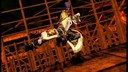
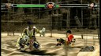
■太白 (太白・金星・Venus)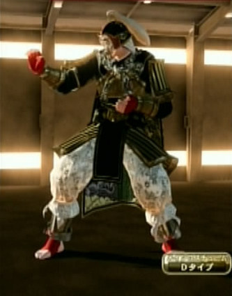
歳星のほうのイメージが固まり、その対となるようなものとして「太白」を整えればよくなった。衣装はわりとすんなりイメージにはまっていき、迷ったのは、面を普通の京劇面にするか灰白京劇面にするかぐらい。何度かゲームで使ってみて灰白京劇面に決めた。 ただ、気になったのは名前。VF5FS は英語でしか名前が登録できないため、歳星は Jupiter で登録したが、太白も美の女神の名たる Venus としてしまうのにはかなり抵抗があり、Taihaku とローマ字で登録することになった。 名前: Taihaku 素体: ラウ Dタイプ 髪、帽子: 猛将の兜 顔面: 灰白京劇面 手: 赤いハンドバンテージ アウター: 虎刺繍入り闘将鎧 肌: 色白 ベルト: 濃紺武将帯 パンツ: 白猛将パンツ 足: レッドレッグバンテージ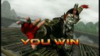
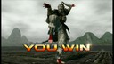
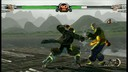
■<ruby><rb>螢惑</rb><rt>けいこく</rt></ruby> (螢惑・火星・Mars)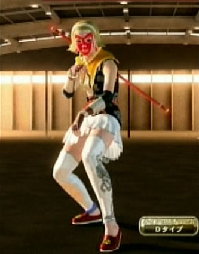
猿面の舞というと、実は VF5 には猿をまねた拳法を使うアイリーンがいる。彼女には顔面を猿面にメイクするアイテムがあった。「太白」はラウを元にしてできたが、仮にアイリーンを素体に使うとすれば、どういうふうに作るだろうと考えた。 少年的女性性を生かした斉天大聖 孫悟空 風に…でも、アイリーンのデフォルト衣装のようなマンガチックなものより、孫悟空のモデルとも言われるハクビシンまたは猩々のような「霊獣」に近い姿、清楚で幽玄な霊獣の姿が想い浮かんだ。 当然、悟空の頭の輪っかは必要で、霊獣は輝く細い髪を長く振り乱している…というイメージから入って、まずは猿顔にしてそれに合う頭部を探した。すると、候補が二つ上がった。「ブロンドホワイトヘアバンド」と「シルバー横結びおさげ」だ。霊獣のイメージに近いのはブロンドのほうだが、これだと頭の輪っかが少しイメージが違う。シルバーのほうはイメージとは違うがなんともかわいく、輪っかが似合う。 両方を活かしたいとして作ったのが Mars と Mercury になる。悟空を Marsに充てるのは自然だと私は思うが、Mars に女性キャラを持ってくるのは少し違う印象もあった。でも、できあがってみると、神事においては、むしろ霊獣性と少年的を両立させるものとして、このほうがふさわしいのではと思うようになった。 (なお、火星を意味する螢惑の「螢」の字は本当は、「虫」のところに「火」が入った字。) 名前: Mars 素体: アイリーン Dタイプ 髪、帽子: ブロンドホワイトヘアバンド 瞳: ブルーコンタクトレンズ 耳: ルビーピアス 鼻、口: 猿の京劇メイク 手首: ブレスレットセット 手: 茶色い指開きグローブ 首: オレンジケープ インナー: ブラックラインスポーティーシャツ アウター: 黒い中華袈裟 上半身(後): 伸びる如意棒 ベルト: 花柄茶帯紐 パンツ: ホワイトミニスカート 足: レッドチャイナシューズ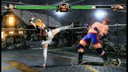
■辰星 (辰星・水星・Mercury)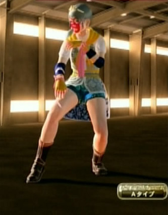
私は、Mercury というと、魔術や水銀のイメージが強い。辰砂のピンクとサファイアのような輝く青色を活かしたデザインを心掛けた。 実は、Mars のインナー・アウター・パンツを決めたあと、先に Mercury のコスプレを作ってイメージを固め、最後に Mars を微調整した。Mercury の足の肌が出過ぎていることが気になったが、Mercury の「好奇心」男の子的イメージを強調するための半ズボンということにして納得した。 名前: Mercury 素体: アイリーン Aタイプ 髪、帽子: シルバー横結びおさげ 額: 金の冠 瞳: ブルーコンタクトレンズ 耳: ピンクサファイアピアス 鼻、口: 猿の京劇メイク 手首: 桃色リストクロス 手: 黄色い指開きグローブ 首: 黄色い肩巻きスカーフ インナー: 桜色拳法着 アウター: 牡丹柄灰色拳法ベスト ベルト: 紫紐黄色帯紐 パンツ: 水色の花柄刺繍ショートパンツ 足: 茶色拳法ブーツ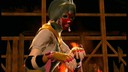
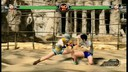
■象徴の混乱 「太白」を作ろうとした欲求は、ここまで作ったところでかなり満足した。惑星ぜんぶじゃなくて七曜とすると、あと三人は作る必要があるが、しかし、アイリーンやラウでは、ペアを作った以上のものは作れそうにない。 それら四者が猿面だから、惑星は猿面とすると、攻略本を見るかぎり、もう猿面が使えるキャラはいない。違う軸を出すしかないな…というところで、これまで四者以外で作ったコスプレで七曜っぽいのがあったな…と思い付いた。(注：この記事を書いたあと気付いた。VF5LA…正確にはPS3版のVF5の攻略本には猿面のキャラは他にいなかったが、VF5FS には猿面のキャラが増え、レイフェイなどでも使えた。) 上で、「平安朝風の衣装で能面を付けて踊るイメージ」をアオイで試そうとしたと書いたが、そういった試作段階で、次に紹介していく「ゆゑ」と「ミカ」ができていた。はじめから月神や太陽神を作ろうとしたら、こんな風には作らないが、七曜の一人ということなら、こういう象徴が軽めの感じでもいいと思った。 あとは土星だが、これまで作ったキャラの中であえて選ぶとすると…下に紹介する「ヒラリー」かな。これは、前作 VF5LA のころに作ったキャラを VF5FSに移植してきたキャラの一人で、Saturn が担うべき「古さ」という意味はそこにこめられる。姿は、むしろ、Venus 的だが、仮面を付ければ暗さも出せるし、これのみで Saturn というのではなく、「ゆゑ」「ミカ」「ヒラリー」の三者が、どれがどれとははっきりさせず「日」「月」「土星」を表すとすれば良いか…などと考えた。 よって、それらがしてなかった仮面をかぶらせ装飾を少し足すなどして、「七曜」とすることにした。祭り以外のときは仮面は外す。この記事では、外したときのイメージもこの三者には用意している。 そして、この記事を書くことにして、画面キャプチャ作業をしたあと、ふと気付いた。土星たる鎮星、Saturn の老いた星というイメージを素直にあてはめるならバーチャファイターには舜帝といううってつけのキャラがいるではないか…と。仮面を猿面にこだわらないなら、最初からそれで良かったではないかと気付いた。 そうして下のシュンを使った Saturn のコスプレができた。面倒な画面キャプチャ作業が終ったあと、そのキャラ一人だけに同じ作業を繰り返す気にならず、しかたなく、それのみ別の機材(デジカメ)で簡易的に撮影することとなった。 ■ミカ (日・太陽・Sun)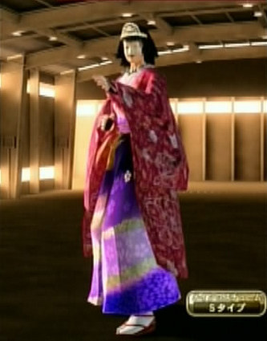
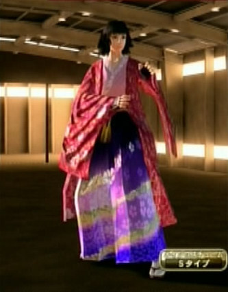
アオイのSタイプに平安朝風の着物があったのがうれしくなって、アオイでまっさきに作ったのが、このコスプレだった。髪も平安朝っぽくなるように最初は、「ロングストレートヘアー」にしていた。 ただ、試したとき「プリンセスロールヘアー」が「平安調風」からは外れるけど、いいと思って、この髪型を活かせるコスプレも別に作ろうと心に決めていた。でも、その後、いろいろなキャラを作るときにこの髪型を試してみたが、他のコスチュームタイプだとどうもしっくりこない。 このコスプレを七曜に加える決心をしたところで、ちょうど良い機会ということで、髪型をプリンセスロールヘアーにするようイメージを固めた。名前は Rie、Ritsuko、Rika といろいろ迷っていたが、「日」にちなむ名ということで「Mika」と決めた。 仮面を外すときはこのキャラのみ、複数外す必要があって、「おかめ面」だけでなく「前天冠」「ヒスイの勾玉」も外す。 なお、「象徴の混乱」期には日のほかに、月のイメージというか「季節」そのもののイメージも込められるとしていた。 名前: Mika 素体: アオイ Sタイプ 髪、帽子: プリンセスロールヘアー 額: 前天冠 顔面: おかめ面 手: 赤紐紺合気グローブ 首: ヒスイの勾玉 アウター: 百花繚乱長羽織 ベルト: 紫花柄帯 パンツ: 紫色の舞花柄合気袴 足: 紅紐草履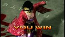
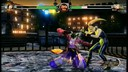
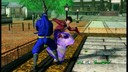
■ゆゑ (月・Moon)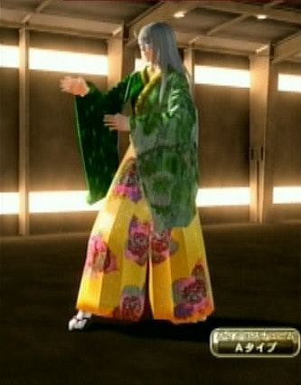
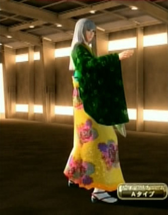
一番お気に入りのコスプレかな。「シルバー姫カット」のアオイがなんとも神秘的で美しく、そこに合う衣装もピタリピタリと決まっていった。 名は最初 Rie にしていたが、「リー」と読まれないか心配で何かいい表記はないかと考えていた。そしてこのコスプレを七曜に加える決心をしたとき、「ゆゑ」をその名にすることにした。確か「ユエ」は「月」の別名だったとうろ覚えしていたが、ググると『カードキャプターさくら』に「月」と書いて「ユエ」と読ませるキャラがいたらしく、その印象が残ったのだろう。 その「ユエ」が旧かなを使って「ゆゑ」と書くべきかはわからないが、聖書の四文字神名に近いものとして Yuwe という表記ができるので、そう決めた。 仮面を外すときは「月白色鬼神の面」を外すだけ。 なお、「象徴の混乱」期には月のほかに、土星のイメージも込められるとしていた。 名前: Yuwe 素体: アオイ Aタイプ 髪、帽子: シルバー姫カット 顔面: 月白色鬼神の面 アウター: 緑合気振袖 ベルト: 赤色飾り紐水色帯 パンツ: 牡丹柄黄色合気袴 足: 赤紐草履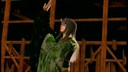
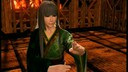
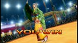
■ヒラリー (彗星・Comet Halley or 土星・Saturn or 啓明・金星・Venus)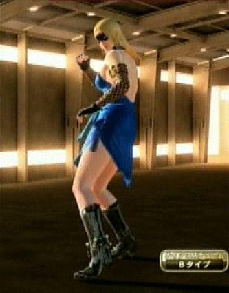
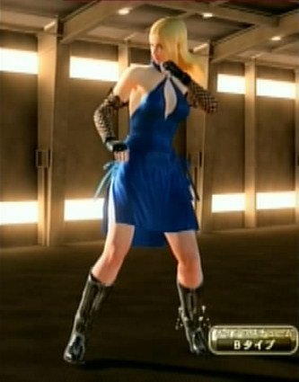
前作の VF5LA、《リリアン女学園 編》で紹介したもので、Aタイプ、Cタイプ、 Dタイプを使ったコスプレをしていて、残った Bタイプをどうするかというときに、そのセクシーなドレス姿から、「これぞ金髪美人」といういかにもなキャラを作ろうとした。 白や金よりも、EU のイメージカラーである青を基調としたほうが、現代的な「金髪美人」になった。 それを移植して VF5FS に持ってくるとき名前が必要になった。知的な白人女性の名がいいなぁ…ということで、米国務長官のヒラリー・クリントンやヴァイオリニストのヒラリー・ハーンが思い浮かんで、名を「Hilary」とした。 このコスプレを七曜に加える決心をして黒い仮面を付けさせた。それで Hilary に土星っぽい由来がないか調べたが、Hilary は「陽気な」を意味する hilarious から来ているらしく、どうもそういう意味が読みとれない。 ただ、Venus 的ではあると意識してたので、「象徴の混乱」期には月や、金星は宵の明星の太白、明けの明星の啓明という使い分けもあるらしいので、その啓明のイメージ＝登る太陽のイメージでもあるとすればいいかと考えていた。そもそも土星は大きいが地球から遠く、見えにくい天体なので、他の七曜がアジア的なので、そこから遠いヨーロッパ的なものを表すという意味での土星ということでいいかとも考えていた。 その後、次のシュンを使った鎮星を作ることになり、じゃあ、ヒラリーはどうするかと考えると、ちょうどハレー彗星に名が似ていることに気付いたのだった。 仮面を外すときは「舞踏会マスク」を外すだけ。 名前: Hilary 素体: サラ Bタイプ 髪、帽子: 中分けストレート メガネ: 舞踏会マスク 耳: シャンデリアピアス 手首: ブラックアームウォーマー 手: ブラックストライクグローブ 首: ブルーローズチョーカー インナー: ブルーパーティードレス ベルト: ブルーレザーサッシュ パンツ: カジュアルインナー 足: ブラックストレートブーツ スネ: ゴールドビーズアンクレット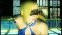
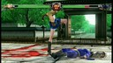
■鎮星 (鎮星・土星・Saturn)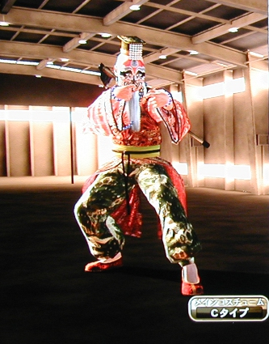
仮面はまずこれしかなく、それに合いながら、太白や歳星のコスプレに遜色なくかつ古く深遠さを感じさせるデザインを…と考えていくとこうなった。鍬をしょってるのは、Saturn が農業神であることから来ている。 このコスプレの写真のみテレビに映したものをデジカメ(オリンパス C-990 ZOOM)で撮影し、それを GIMP で遠近感を少し補正し、他に合うように切り出して縮小したものになる。だから特に色味が違っている。HD 画像を撮影したので、ゆがみがあっても、アナログキャプチャより解像度が良い面があるかもしれない。 他は、まず、いつも使っている HDMI を Xbox 360 に標準で付いてくるビデオ出力にして、それをアナログテレビ対応だった SHARP のハードディスクレコーダーにつないで録画した。それを DVD-R にダビングしたものを PC で再生し、その再生ソフトの機能で、静止画をキャプチャした。そのソフトだと静止画の縦横比が狂うので、それを GIMP のバッチ処理で修正し、ものによっては切り出しを行った。 そして、どの画像も最後に ImageMagick の convert で、コメントにこのサイトの情報を付している。 名前: Saturn 素体: シュン Cタイプ 髪、帽子: 緑の帝王冠 耳: 虎眼石の耳飾り 顔面: 京劇面 手首: 青数珠ブレスレット 首: 青数珠ネックレス アウター: 赤い派手柄拳法服 上半身(後): 鍬 ベルト: 薄黄色帯紐 腰: 金ひょうたん パンツ: 迷彩風薄緑拳法パンツ 足: 赤中華刺繍靴 ■配布物 なお、これらの「コスプレ レシピ」と画面写真をまとめたものを zip化して同人的公開物として SugarSync に置いてあります。 JRF_VF5FS_Cosplay.zip。 VF5FS は、SEGA の 2012年発売の著作物です。私自身は「レシピ」を同人で売れたりしたらいいのになぁ…即売会とかのお祭りにゲーム機とディスプレイを持ちこんで遊べないかなぁ…とか夢想しています。ただ、需要もそれほどないでしょうし、とりあえず公開したほうが愛着を持ってもらえるかと考え、無料で公開しています。ネットで公開した以上、SEGA がどういうかはわかりませんが、基本的に私としては自由に使っていただいてかまいません。 とはいえ、同人活動への色気は残しておきたいので、ダウンロード数がカウントできる SugarSync に置いています。そこに別サイトからリンクするのはいつでもこちらがリンクを切れるのでいいのですが、別サイトにアーカイブを置いての配布は、私か SEGA がいいと言わない限りやめていただくようお願いします。(私の公開自体が同人誌な勝手な公開ですので、SEGA の明示の許諾さえあれば、私は文句をいいません。) ■関連 ●VF5FS コスプレシリーズ(《リリアン女学園 編》、《七曜 編》、《その他 編》、《リリアン女学園 編２》、《イロモノ 編》、《懐かしのスター 編》)。《イロモノ 編》がこの記事の続きのみたいなものになっている。 ●『ソウルキャリバー４』。最初で「他のゲームのキャラクリ」というのはこのゲームのキャラクタークリエイションのこと。このブログで以前、作ったキャラを紹介している。(《バビル二世編》、《懐かしキャラ編１》、《懐かしキャラ編２》) 更新：2012-12-09,2012-12-11,2012-12-21 初公開：2012年12月09日 19:23:26 最新版：2012年12月21日 21:27:11
Trackbacks: 《Virtua Fighter 5 FS コスプレ：イロモノ 編》 from JRF の私見：雑記 先日の VF5FS コスプレの三つの記事のあと、全キャラの衣装を調べるべく、とにかく全キャラに一つずつ「コスプレ」を作ってみることにした。VF5FS の「コスプレ」は、他のゲーム(後述)の「キャラクリ」と違い、自由度が少ないが、限られたコスチュームで自分が気に入るコーディネイトをした結果、何かのテーマやキャラが見えてくるのが楽しい。 今回は、そうやって「コスプレ」させたのをテーマごとに《リリアン女... 受信： 2012-12-21 21:14:28 (JST) Comments: [E:yacht] 更新：「もう猿面が使えるキャラはいない。」のところ、「攻略本を見るかぎり」と限定を付け、後に使えるキャラが他にいたことに気づいた旨を注記した。 気づいたのは、コスプレを他にも試していてのこと。リリアン女学園編の続きのパイを使ったコスプレも試した。しばらくしたら、それも含め新たな編の記事を書くかも。 投稿: JRF | 2012-12-11 21:30:08 (JST) [E:bicycle] 更新：《リリアン女学園 編２》、《イロモノ 編》、《懐かしのスター 編》の公開に合わせ、《リリアン女学園 編》、《七曜 編》、《その他 編》 の関連にそれらを足し、主にリード部分をチョコッといじった。 投稿: JRF | 2012-12-21 21:37:44 (JST) Links: Virtua Fighter 2: http://amcvt.sega.jp/model2/vf2.html リリアン女学園 編: http://jrf.cocolog-nifty.com/column/2012/12/post.html 七曜 編: http://jrf.cocolog-nifty.com/column/2012/12/post-1.html その他 編: http://jrf.cocolog-nifty.com/column/2012/12/post-2.html Virtua Fighter 5 Final Showdown: http://amcvt.sega.jp/vf5fs/ Virtua Fighter 5 Live Arena: http://virtuafighter5.jp/xbox360/ カードキャプターさくら: http://www.clamp-net.com/works/ccsakura GIMP: http://www.gimp.org/ ImageMagick: http://www.imagemagick.org/ JRF_VF5FS_Cosplay.zip: https://www.sugarsync.com/pf/D252372_79_8912523711 リリアン女学園 編２: http://jrf.cocolog-nifty.com/column/2012/12/post-3.html イロモノ 編: http://jrf.cocolog-nifty.com/column/2012/12/post-4.html 懐かしのスター 編: http://jrf.cocolog-nifty.com/column/2012/12/post-5.html ソウルキャリバー４: http://www.soularchive.jp/SC4/ バビル二世編: http://jrf.cocolog-nifty.com/column/2010/10/post-1.html 懐かしキャラ編１: http://jrf.cocolog-nifty.com/column/2010/11/post-1.html 懐かしキャラ編２: http://jrf.cocolog-nifty.com/column/2010/11/post.html
後方参照 (4 件)
- URL参照 「ゲームは死後、むくわれる」？ 2018年07月20日
- URL参照 Virtua Fighter 5 FS コスプレ：リリアン女学園 編 その２ 2012年12月21日 21:09:38
- URL参照 Virtua Fighter 5 FS コスプレ：イロモノ 編 2012年12月21日 21:13:20
- URL参照 Virtua Fighter 5 FS コスプレ：懐かしのスター 編 2012年12月21日 21:17:33